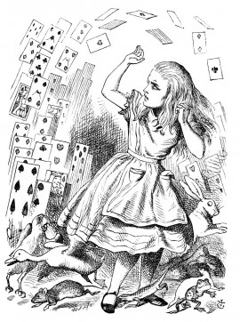

'Stuff and nonsense!' said Alice loudly. 'The idea of having the sentence first!'
'Hold your tongue!' said the Queen, turning purple.
'I won't!' said Alice.
'Off with her head!' the Queen shouted at the top of her voice. Nobody moved.
'Who cares for you?' said Alice, (she had grown to her full size by this time.) 'You're nothing but a pack of cards!'
At this the whole pack rose up into the air, and came flying down upon her: she gave a little scream, half of fright and half of anger, and tried to beat them off, and found herself lying on the bank, with her head in the lap of her sister, who was gently brushing away some dead leaves that had fluttered down from the trees upon her face.
'Wake up, Alice dear!' said her sister; 'Why, what a long sleep you've had!'
'Oh, I've had such a curious dream!' said Alice, and she told her sister, as well as she could remember them, all these strange Adventures of hers that you have just been reading about; and when she had finished, her sister kissed her, and said, 'It WAS a curious dream, dear, certainly: but now run in to your tea; it's getting late.' So Alice got up and ran off, thinking while she ran, as well she might, what a wonderful dream it had been.
But her sister sat still just as she left her, leaning her head on her hand, watching the setting sun, and thinking of little Alice and all her wonderful Adventures, till she too began dreaming after a fashion, and this was her dream:--
First, she dreamed of little Alice herself, and once again the tiny hands were clasped upon her knee, and the bright eager eyes were looking up into hers--she could hear the very tones of her voice, and see that queer little toss of her head to keep back the wandering hair that WOULD always get into her eyes--and still as she listened, or seemed to listen, the whole place around her became alive with the strange creatures of her little sister's dream.
The long grass rustled at her feet as the White Rabbit hurried by--the frightened Mouse splashed his way through the neighbouring